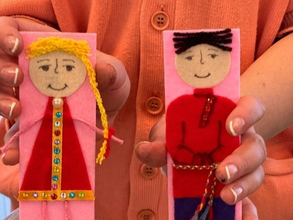
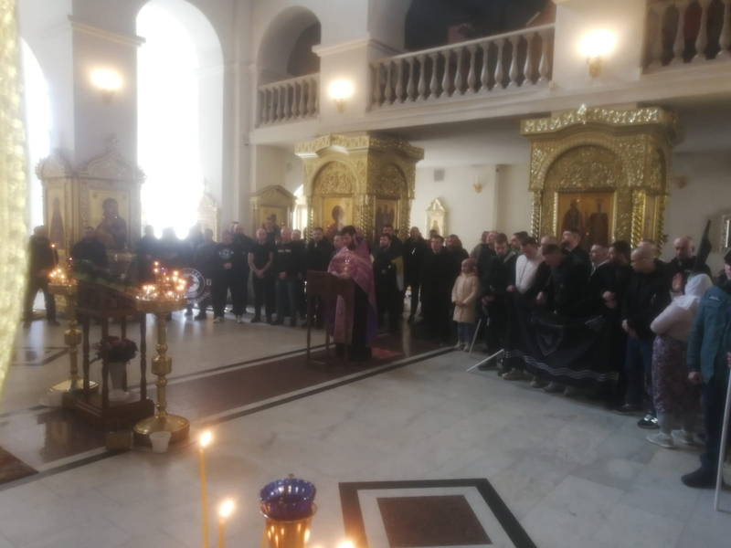
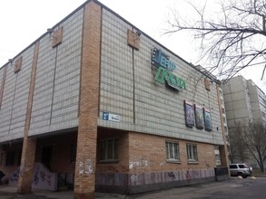
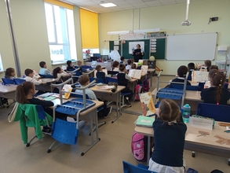
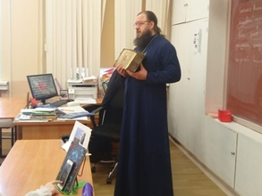

Новости благочиния


Приглашаем учащихся общеобразовательных школ (III - VI-e классы) своими руками сделать книжную закладку из фетра. Дети под руководством опытных наставников самостоятельно сделают аппликацию в виде книжной закладки. Мастер-классы будут проводиться в период весенних каникул (с 24 по 28 марта) в будние дни.
Время проведения мастер-классов: 10:00 13:00 Занятия будут проводиться в храме Рождества Христова по адресу (ул. Энгельса, 12). В программу творческой встречи войдут: рассказ о возникновении книгопечатания на Руси; ознакомление детей со старинными книгами из фонда музея, просмотр анимационного фильма, чаепитие

22 марта в храме Рождества Христова прошёл молебен о здравии для представителей Добровольной Народной Дружины, "Русской общины", "Северного человека" и их семей. По окончании молебна для всех желающих была отслужена заупокойная лития о погибших воинах в зоне СВО.
Встреча соратников закончилась общим фото у стен храма Рождества Христова и совместным чаепитием с братской беседой.

25 марта в 19:00 состоится показ и обсуждение фильма, в рамках Дня православной книги.
Место проведения показа - *Центр досуга* (ул. Энгельса, 2А). Показ и обсуждение фильма проводит иерей Александр Сорокин.

20 марта в СОШ № 18 для ребят из первых и вторых классов прошли три встречи с калужской писательницей Светланой Пономаревой.
Герои каждого детского писателя немного похожи на своего автора. Два котика , Сеня и Веня, любопытные и веселье, познают окружающий мир во всех его аспектах. Они совершают ошибки, ищут пути их исправления. Сеня и Веня учатся! А вместе с ними учатся дети, читающие книги о их приключениях. Как важно, нужные книжки в детстве читать! Книги Светланы Ивановны - нужные книги для наших детей! Более 700 встреч с детьми разных возрастов, за неполных два учебных года, провела Светлана Ивановна.

В рамках Дня православной книги в 3, 4 и 5 православных классах были проведены уроки, посвящённые этому празднику. Дети услышали рассказ о появлении на Руси первых рукописных книг на церковнославянском языке и об их истории на протяжении почти шести столетий до первой печатной книги "Апостол".
Особое внимание детей привлёк показ Следованной Псалтири 1822 года издания из алтаря храма свв. р/а Владимира и Ольги.